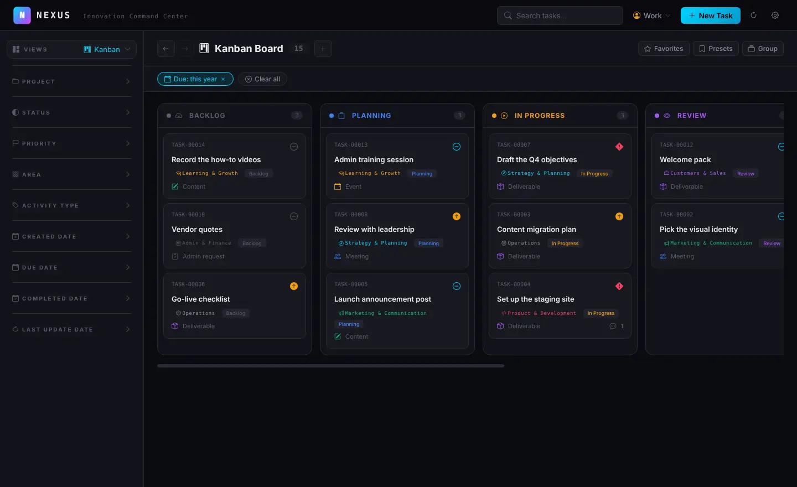
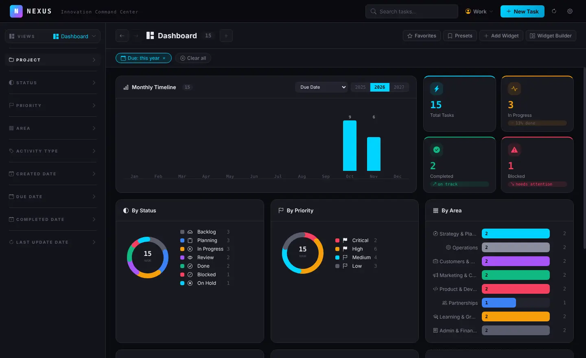
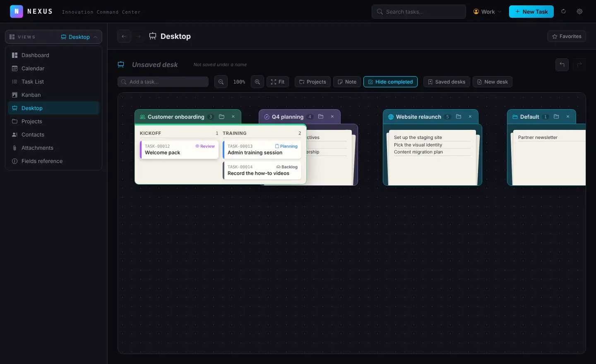
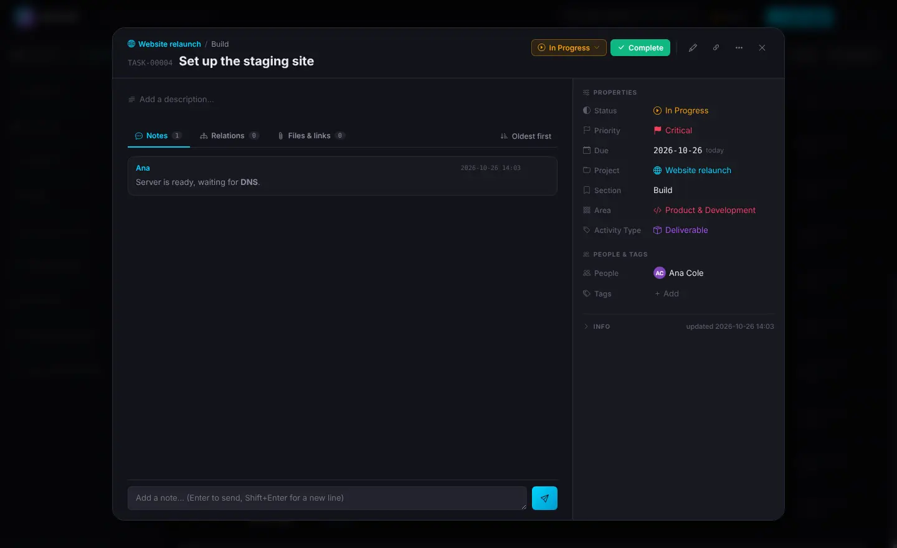
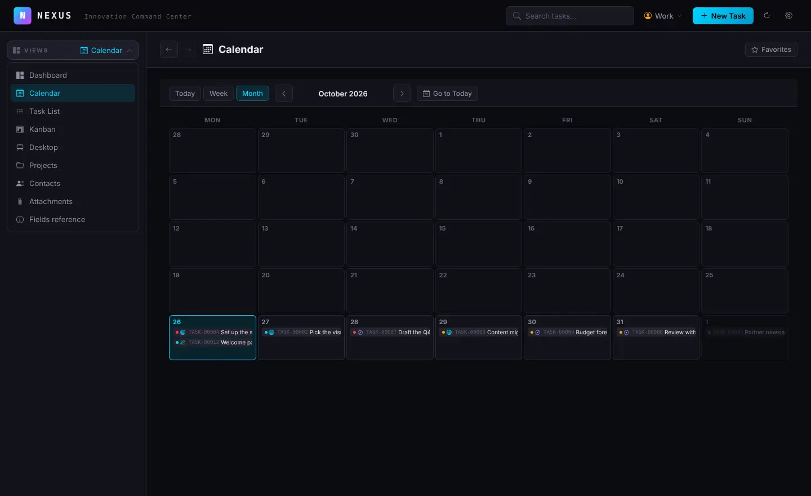

Dashboard & widgets
Status, priority and area at a glance, a monthly timeline, and your own charts: group, stack, count or sum any field.
NEXUS is a local-first task manager: a dashboard, a calendar, a task list, a kanban board and a desk where your projects lie as folders. Everything is stored in a SQLite file on your computer. No account, no cloud, no tracking.

One window, many ways to look at the same work. Switch views in a click, keep several filtered tabs open, and save the pages you come back to.
Status, priority and area at a glance, a monthly timeline, and your own charts: group, stack, count or sum any field.
A sortable table with the columns you pick, and a drag-and-drop board grouped by status, priority, project or any field.
Today, week and month views of what is due, overdue tasks first; drag a task to another day of the week to reschedule it.
Projects lie as folders on a desk you pan and zoom. Open one, take tasks out to focus on them, add sticky notes, save the desk by name.
Properties, Markdown notes and comments, relations (blocks, depends, related) with a graph, files and links. Undo any change.
Projects and sections, your own values for status, priority and area, custom fields (choice, number, currency, Markdown…), contacts.
Filter by any field, with NOT. Save presets, open filtered views in tabs, go back and forth, and keep favorite pages one click away.
One database per profile — work, home, a client — switched from the header. Start a new profile from another one's setup.
Dark, light or system theme, keyboard shortcuts, and a fast search across titles, notes, tags and people, in a tab of its own.
Click a picture to see it full size.




The nexus command ships with the app and works on the same database:
add, find, update and complete tasks, manage projects, fields and backups, with
readable tables or JSON. No Node.js needed.
# what is in progress, as JSON $ nexus task list --status "In Progress" --json # a new task in a project, due Friday $ nexus task add --title "Draft the Q4 objectives" \ --project "Q4 planning" --priority High --due 2026-10-30 # done $ nexus task complete TASK-00042 # a snapshot into your cloud folder, now $ nexus snapshot create
Your tasks are a file on your computer — not on our servers, because there are none.
Each profile is one SQLite file on your disk. No account, no sign-in, no telemetry; NEXUS works fully offline.
Point NEXUS at Dropbox, OneDrive or iCloud: it publishes point-in-time snapshots there, and offers the newest one from your other computer.
Full JSON export and import — tasks, comments, relations and attached files — plus a configuration export to start new profiles. No lock-in.
Free for Windows, macOS and Linux. Older versions and checksums are on the releases page.
Loading the latest version…
xattr -cr /Applications/Nexus.app.
Linux: make the AppImage executable (chmod +x), or install the .deb.
The Windows installer and the .deb also put the nexus command on your PATH; no administrator rights are needed on Windows.